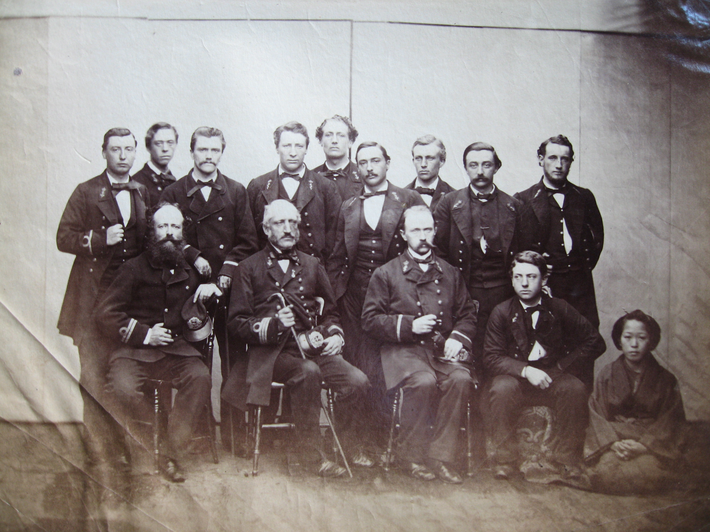
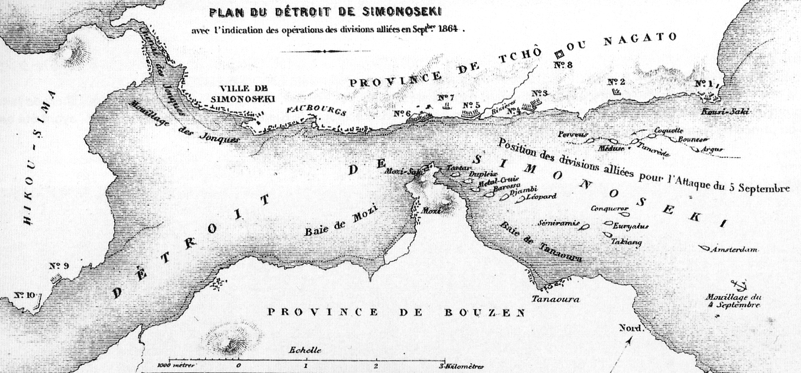
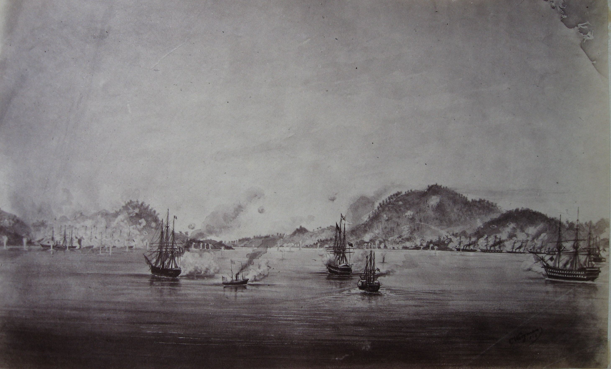
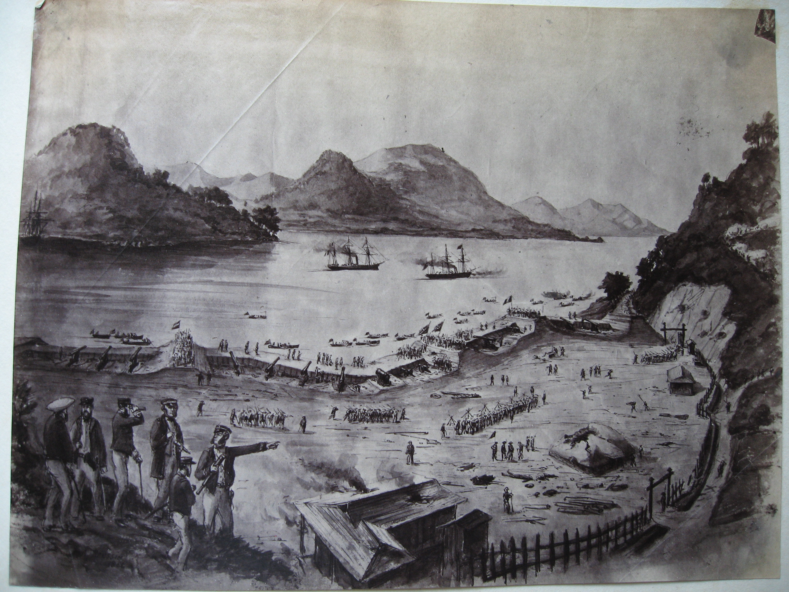

Historische artikelen · Japan, 1863–1864
De expeditie naar Shimonoseki
Vier vloten, een zeestraat en de rol van de Djambi
In september 1864 vielen Britse, Franse, Nederlandse en Amerikaanse eenheden de kustbatterijen van het Japanse domein Chōshū aan. Jan Christian Coops diende op de Nederlandse Djambi. Zijn staat van dienst, een groepsfoto en verslagen van de expeditie brengen de familiegeschiedenis en het internationale conflict bij elkaar.
Deel een foto, brief of aanwijzing
01 / De aanloop in 1863
Een doorgang onder vuur
De Straat van Shimonoseki, tegenwoordig ook de Kanmonstraat genoemd, ligt tussen Honshū en Kyūshū en vormt de westelijke toegang tot de Japanse Binnenzee. De kustbatterijen van Chōshū konden er de doorvaart onder vuur nemen. Het domein stond onder Mōri Takachika, in westerse stukken vaak de vorst van Nagato genoemd. [1] [4]
In 1863 beschoten de strijdkrachten van Chōshū verschillende buitenlandse schepen. Op 11 juli werd de Nederlandse Medusa onder François de Casembroot aangevallen. Een Amerikaanse diplomatieke brief uit die maand noemt ook de beschieting van de Franse Kienchang. De Casembroot publiceerde later zijn eigen verslag van de gebeurtenissen. [1]
De aanvallen speelden zich af in een conflict over buitenlandse handel en over het gezag binnen Japan. In 1864 stelde een gezant van Chōshū dat zijn vorst bevelen van de keizer en de shogun had gevolgd. De buitenlandse gezanten betwistten dat die bevelen toestemming gaven om schepen zonder waarschuwing te beschieten. Het diplomatieke verslag legt beide lezingen vast. [4]
02 / De vloot en de landingen
Van Yokohama naar Shimonoseki
De Nederlandse schepen Metalen Kruis, Djambi, Amsterdam en Medusa vormden het eskader van kapitein-ter-zee J.E. de Man. Zij opereerden met Britse en Franse schepen onder het gezamenlijke bevel van de Britse admiraal Augustus Kuper. De Amerikaanse bijdrage aan de expeditie was de gecharterde stomer Ta-Kiang. Het Amerikaanse oorlogsschip Jamestown bleef bij Yokohama. [2] [4]


Het verslag van Fredrick Pearson, commandant van de Ta-Kiang, geeft een beeld van de expeditie vanaf één schip. [3]
- 1 september. Pearson bereikte de verzamelplaats Hime Sima in gezelschap van de Djambi.
- 4–5 september. De vloot naderde in drie colonnes. Op 5 september begon het bombardement. Tegen het eind van de middag zwegen volgens Pearson de batterijen die hij vanaf zijn schip kon zien.
- 6 september. Na hernieuwd vuur bracht de vloot Britse, Franse en Nederlandse eenheden aan land. De Ta-Kiang sleepte twee boten met een Franse landingsgroep. Tegen het middaguur waren volgens Pearson de batterijen ingenomen.
- 7–8 september. De Ta-Kiang nam 23 gewonden aan boord. Pearson noteerde dat de vijandelijkheden op 8 september stopten.


De berichten bereikten Europa met vertraging. The Times publiceerde op 1 november een telegram over het forceren van de doorgang en op 10 november een uitvoeriger verslag over de gevechten van 5 en 6 september. De vroege telegrammen en het Amerikaanse verslag noemen verschillende aantallen buitgemaakte stukken geschut. Die aantallen zijn daarom lastig als één vaststaand totaal te gebruiken. [2] [3]
03 / Het familiearchief
Jan Christian aan boord van de Djambi
Jan Christian Coops diende bij de administratieve dienst van de marine. Zijn staat van dienst plaatst hem bij de Djambi en vermeldt zijn aanwezigheid bij het gevecht in september 1864. [5]
Een marinebrief aan Coops uit 1866 betreft zijn latere inzet tijdens de expeditie naar de noordoostkust van Sumatra. Die brief, zijn reizen en zijn werk in Willemsoord staan in de biografie van Jan Christian Coops.
04 / Afspraken en herinnering
Van de kustbatterijen naar de onderhandelingstafel
De afspraken met Chōshū over het staken van de gevechten betroffen onder meer de doorvaart, de mogelijkheid om voorraden in te slaan en het verbod om de kustversterkingen te herstellen. De financiële afwikkeling liep vervolgens via de regering van de shogun. In de overeenkomst van 22 oktober 1864, ondertekend in Yokohama, werd de vergoeding aan de vier mogendheden op drie miljoen dollar gesteld. De overeenkomst liet de mogendheden ook ruimte om de opening van een haven in de Binnenzee als alternatief te aanvaarden. [3] [4]


In 1865 bood koning Willem III de Djambi een vlag aan als blijk van waardering voor haar aandeel in de expeditie. De driekleur met opschrift is bewaard gebleven en is te zien in de online collectie van het Rijksmuseum. [7]
Verantwoording
Bronnen en beeldmateriaal
- Amerikaanse diplomatieke correspondentie uit juli 1863 over de beschietingen. François de Casembroot, De Medusa in de wateren van Japan, in 1863 en 1864 (1865). Diplomatieke brief en bijlagen · Japanse Nationale Bibliotheek, catalogusvermelding.
- The Times, 1, 5 en 10 november 1864, transcripties in het familiearchief. P. Vermeulen, Schepen van de Koninklijke Marine en die der GM (1962), aangehaald op de eerdere familiepagina. Verzamelde krantenberichten · Nieuwe Maritieme Geschiedenis van Nederland.
- Fredrick Pearson, verslag van de Ta-Kiang, 11 september 1864, met de afspraken over het staken van de vijandelijkheden. Official Records of the Union and Confederate Navies, reeks I, deel 3 (1896), pp. 203–204, transcriptie in het familiearchief. Vindplaats van het verslag · Amerikaanse diplomatieke brief van 1 oktober 1864.
- Diplomatieke stukken met verklaringen van Chōshū en de regering van de shogun. Overeenkomst van Yokohama, 22 oktober 1864. Onderhandelingen en bijlagen · Overeenkomst en Amerikaanse vlootopgave · Japanse tekst van de overeenkomst.
- Nationaal Archief, Stamboeken Marinepersoneel, toegang 2.12.14, inv. 64, staat van dienst nr. 31, scans 0066–0067. Scan uit het familiearchief.
- Familiearchief Coops–Kakebeeke, map over de Bauduin-collectie en Shimonoseki. Catalogusnotities Foto Jan Christian Coops en Foto’s met bestelnummers, B2.38B. De drie reproducties stonden al op de eerdere familiepagina. De Franstalige kaart is opgenomen in het familiedossier.
- Rijksmuseum, object NG-MC-1889-85-3, 1865. Scheepsvlag van de ‘Djambi’.

De literatuurnotitie in het familiearchief verwijst ook naar Het gevecht te Simonoseki door de Japanners verhaald (1865, deel I, p. 145 e.v.) en Krijgsverrigtingen der Nederlandsche marine in de straat van Simonoseki (1866, deel II, p. 146 e.v.), beide in Verhandelingen en berigten betrekkelijk het zeewezen. Deze vindplaatsen zijn aanknopingspunten voor verder onderzoek.